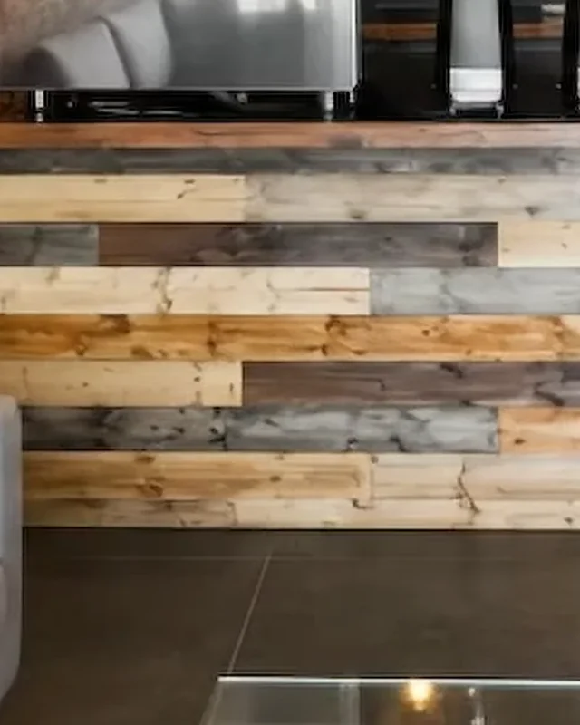
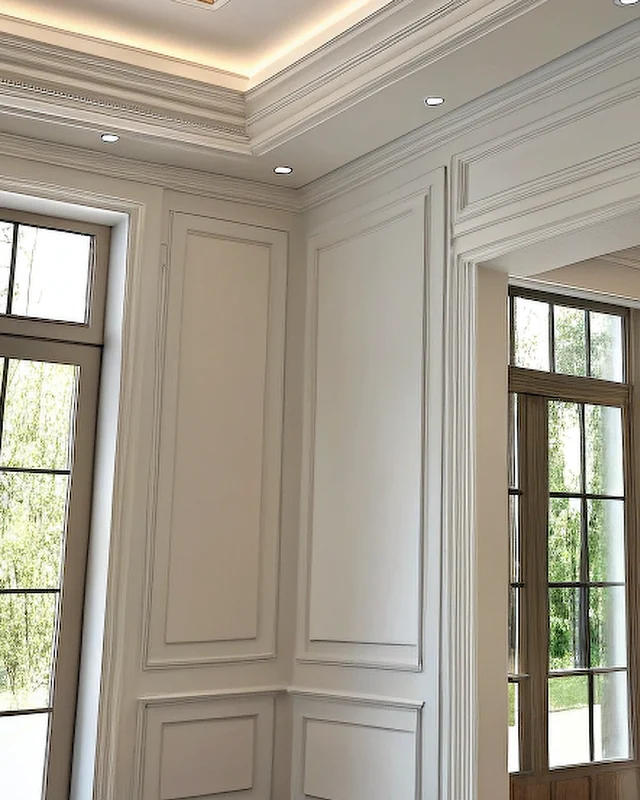
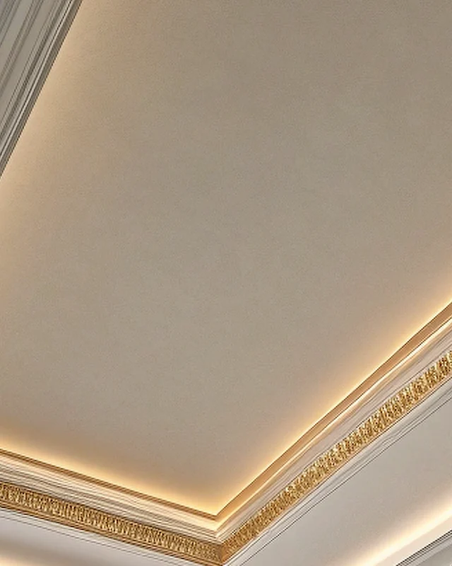
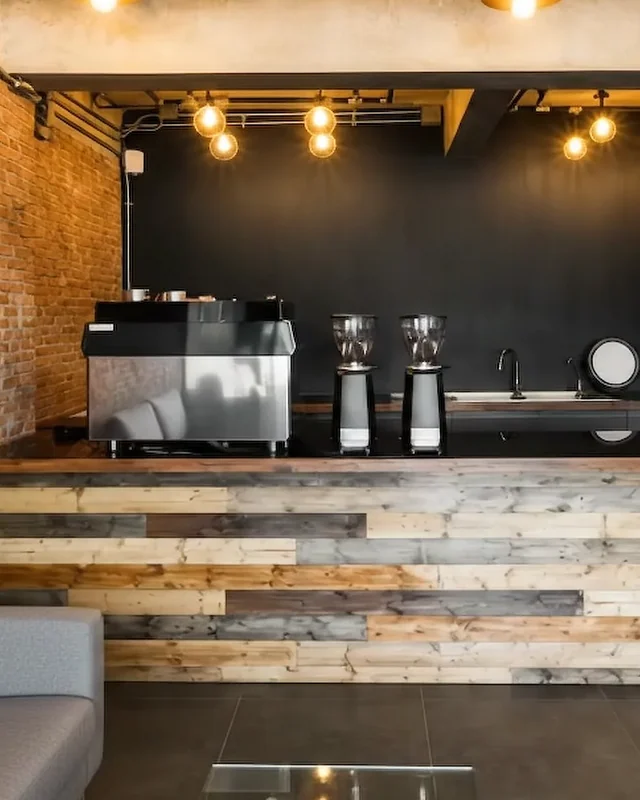
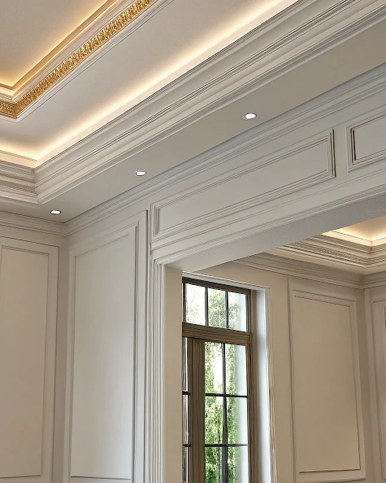

404
That page is not here
The link may be old or mistyped. The pages below cover everything on the site.
Services
-

Custom Kitchens
Custom kitchen cabinetry in Toronto, milled and installed by our own shop.
-

Cabinetry & Built-Ins
Custom built-in cabinetry in Toronto.
-

Architectural Millwork
Architectural millwork in Toronto.
-

Commercial Fit-Outs
Commercial millwork in Toronto for restaurants, bars, cafes, offices and retail.
-

Interior Renovation
Millwork-led interior renovation in Toronto.
Tell us about the room.
Send drawings, a photo or just the dimensions. We come back with a measured quote.
Start a project